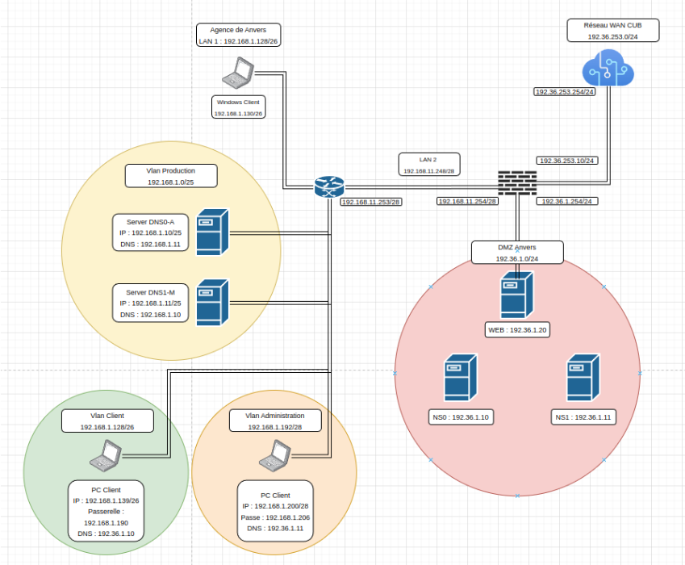

Serveur DNS Autorité (Esclave) Matéo¶
Auteurs : Matéo Beaugendre
Date de création : 09/10/2025

Administration et exploitation des services¶
Activité 1 - Mise en place du serveur DNS (esclave) faisant autorité au sein de l'entreprise CUB¶
Partie 1 : Réalisation d'un nouveau schéma logique¶

Partie 2 : Installation et paramétrage du serveur DNS (esclave) faisant autorité¶
1 - Vérification préalable¶
Mettez à jour votre serveur
- sudo apt update && sudo apt upgrade
Sur votre serveur Debian 12, installez le service de journalisation rsyslog à la place de journalctl. Cela vous permettra de disposer de fichiers de log clairs au format texte situés dans /var/log.
- sudo apt install rsyslog
Installez le service Bind 9 et les outils diagnostics DNS
- sudo apt install bind9 dnsutils
2 - Définir les paramètre réseau du serveur¶
- sudoedit /etc/network/interfaces
source /etc/network/interfaces.d/*
# The loopback network interface
auto lo
iface lo inet loopback
# The primary network interface
allow-hotplug ens192
auto ens192
iface ens192 inet static
address 172.16.3.11
netmask 255.255.255.0
gateway 172.16.3.254
3 - Définir les serveurs DNS Récursif à utiliser¶
- sudoedit /etc/resolv.conf
Après avoir entré la commande il y aura que le nameserver 9.9.9.9 on ajoute un autre DNS public
nameserver 86.54.11.100
nameserver 9.9.9.9
4 - Prendre en compte les modifications des paramètres réseaux¶
- sudo systemctl restart networking
Configurer correctement les fichiers /etc/hostname et /etc/hosts
Le fichier hostname sert à donner un nom à votre serveur.
- sudoedit /etc/hostname
5 - Ajouter le hostname au fichiers /etc/hostname et /etc/hosts¶
ajouter ns1 dans le fichier
- sudoedit /etc/hosts
127.0.0.1 localhost
127.0.1.1 ns1.anvers.cub.sioplc.fr ns1
# The following lines are desirable for IPv6 capable hosts
::1 localhost ip6-localhost ip6-loopback
ff02::1 ip6-allnodes
ff02::2 ip6-allrouters
Il est nécessaire de redémarrer le serveur pour prendre en compte le changement de nom.
- sudo shutdown -r now
6 - Exemple de configuration d'un serveur DNS esclave faisant autorité¶
Déclaration de la zone que l’on souhaite transférer depuis le serveur maître sur le serveur esclave :
- sudoedit /etc/bind/named.conf.local
zone "anvers.cub.sioplc.fr" {
type slave;
masters { 192.36.1.10; };
file "/var/cache/bind/db.anvers.cub.sioplc.fr";
};
Grâce à cette configuration, le serveur esclave réalisera un transfert de zone auprès du serveur maître. Pour que le contenu du transfert soit stocké dans un fichier de zone, il est nécessaire de le créer au préalable avec les permissions adéquates :
-
sudo touch /var/cache/bind/db.anvers.cub.sioplc.fr
-
sudo chown bind:bind /var/cache/bind/db.anvers.cub.sioplc.fr
7 - Mise en place de la journalisation¶
- sudoedit /etc/bind/named.conf.log
logging {
*channel bind\_log {*
*file "/var/log/bind.log" versions 3 size 100m;*
*severity info;*
*print-category yes;*
*print-severity yes;*
*print-time yes;*
*};*
*category default { bind\_log; };*
};
-
sudo touch /var/log/bind.log
-
sudo chown bind:bind /var/log/bind.log
-
sudoedit /etc/bind/named.conf
// This is the primary configuration file for the BIND DNS server named.
// If you are just adding zones, please do that in /etc/bind/named.conf.local
include "/etc/bind/named.conf.options";
include "/etc/bind/named.conf.local";
include "/etc/bind/named.conf.default-zones";
// Ajout du fichier de parametrage de la journalisation du service BIND
include "/etc/bind/named.conf.log";
Sur les systèmes Debian récents, un logiciel de sécurité de type MAC (Mandatory Access Control) nommé AppArmor est activé par défaut. Il surveille entre autres les droits d’accès des différents processus lancés sur le système. Par défaut, AppArmor empêche le service Bind 9 de lire et écrire dans le répertoire /var/log/. Il est donc indispensable de changer ces permissions.
- sudoedit /etc/apparmor.d/usr.sbin.named
# On autorise le daemon Bind 9 à lire et ecrire dans le fichier /var/log/bind.log
/var/log/bind.log rw,
On vérifie que le nouveau fichier de configuration de AppArmor ne contient pas d’erreurs puis on redémarre le service.
- sudo apparmor_parser -r /etc/apparmor.d/local/usr.sbin.named
- sudo systemctl restart apparmor
La commande named-checkconf permet de vérifier si des erreurs de syntaxe sont présentes et de fournir les éléments ou lignes qui posent problème dans un fichier en particulier.
- sudo named-checkconf -z
- sudo systemctl restart bind9
- sudo systemctl status bind9
8 - Test des DNS faisant autorité esclave et maître¶
Vérifier le serial SOA

nous retrouvons le numéro sérial du DNS maître

Test de la résolution DNS

Résultat de la commande